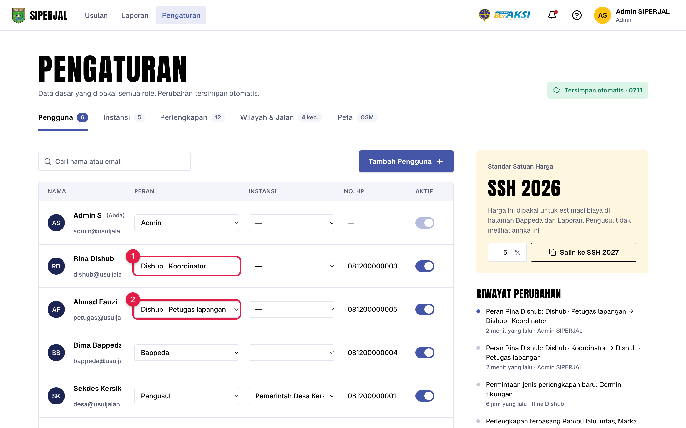
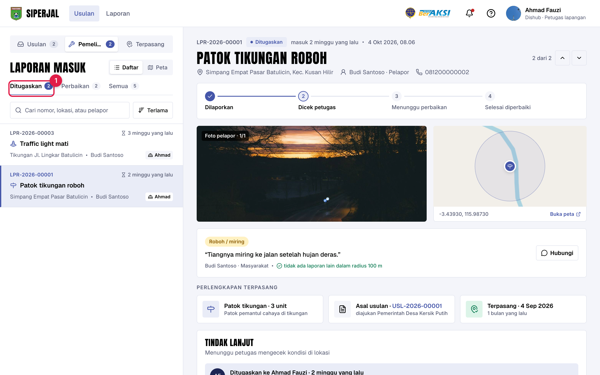
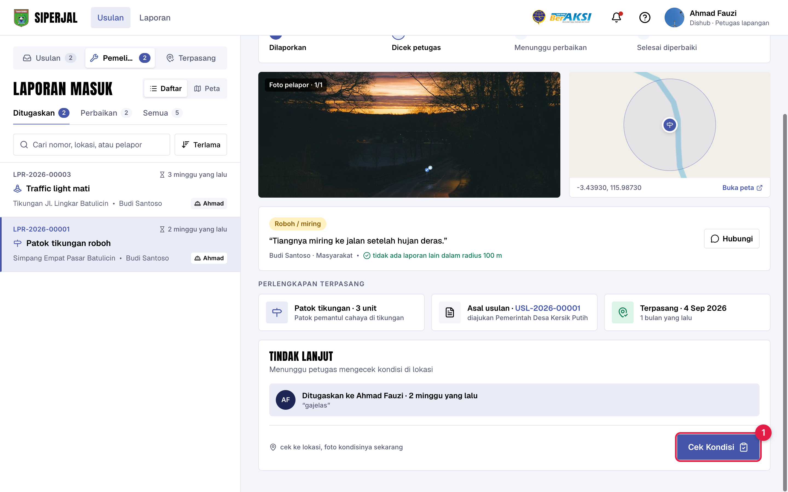
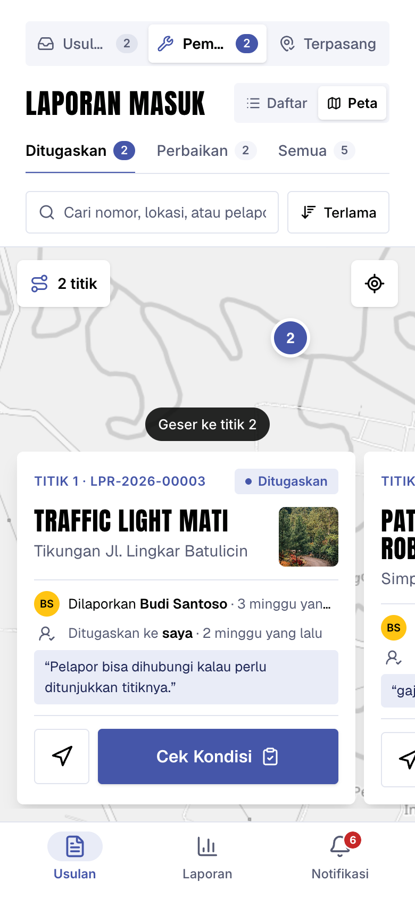
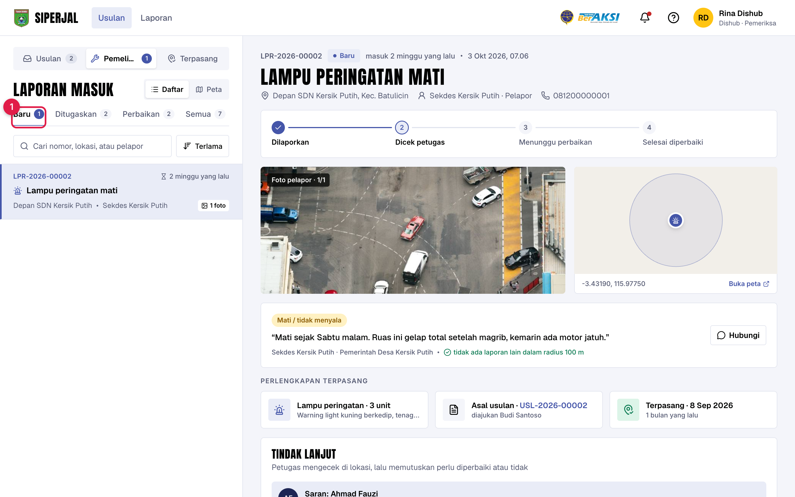
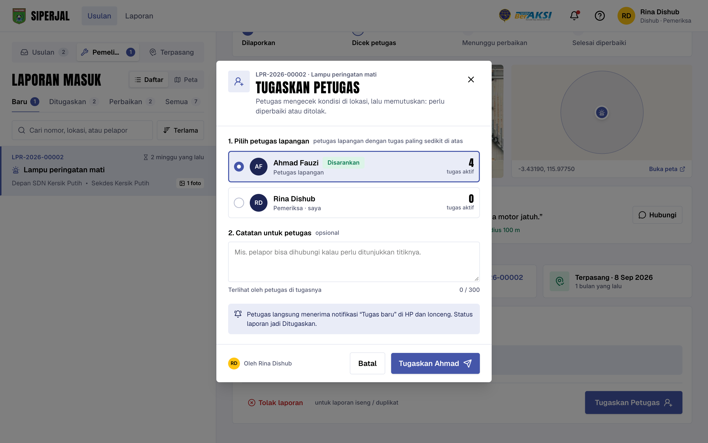
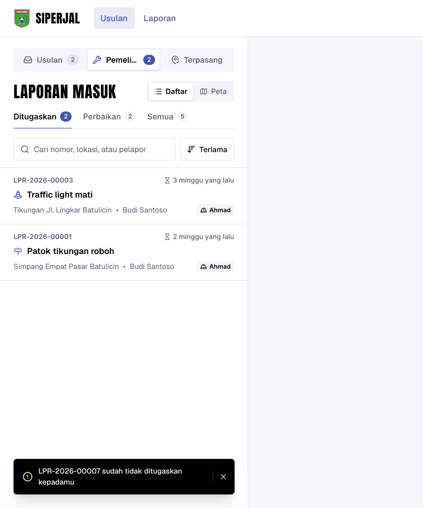

Akun petugas lapangan sekarang hanya melihat laporan kerusakan yang ditugaskan kepadanya. Koordinator tetap melihat semua dan membagi tugas.
Untuk Usulan tidak ada perubahan: kedua akun tetap bisa memeriksa dan menandai terpasang.
| Di menu Pemeliharaan | Koordinator | Petugas lapangan | Admin |
|---|---|---|---|
| Melihat laporan | Semua | Hanya tugasnya | Semua |
| Tab Baru (laporan belum ditugaskan) | ✓ | — | ✓ |
| Tugaskan / Ganti Petugas | ✓ | — | — |
| Tolak laporan (iseng / duplikat) | ✓ | — | — |
| Cek Kondisi & Tandai Selesai Diperbaiki | ✓ | Tugasnya saja | — |
| Dikabari saat ada laporan baru | ✓ | Saat ditugaskan | — |
Semua akun Dishub yang sudah ada otomatis jadi Koordinator. Cukup ganti akun petugas ke Dishub · Petugas lapangan.
Begitu dipilih langsung tersimpan, ada tombol Urungkan. Pilihan yang sama ada di Tambah Pengguna.

Ahmad Fauzi hanya melihat 5 laporan yang ditugaskan kepadanya. Koordinator melihat 7.
Bar atas menampilkan Dishub · Petugas lapangan, jadi jelas akun apa yang dipakai.

Tombol Tolak laporan dan Ganti Petugas. Itu tugas koordinator.

Kartu bertuliskan Ditugaskan ke saya.

Hanya koordinator yang dapat kabar Laporan kerusakan baru. Petugas dikabari saat ditugaskan.

Akun petugas lapangan di atas, lalu yang tugas aktifnya paling sedikit. Koordinator tetap bisa dipilih bila ingin cek sendiri.
Laporan langsung muncul di akun petugas itu (dan hilang dari petugas sebelumnya bila Ganti Petugas).

Laporan sudah dipindah ke petugas lain, tapi petugas lama mengetuk notifikasi “Tugas baru” yang lama.
Muncul pesan “… sudah tidak ditugaskan kepadamu” dan daftar tugasnya sendiri yang tampil.
